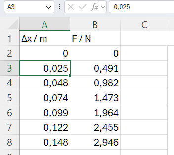

1Skriv dine data i to kolonner
Skriv x-værdierne i kolonne A og y-værdierne i kolonne B. Excel bruger altid den venstre kolonne som x-akse, så rækkefølgen betyder noget. På x-aksen står den størrelse, du selv har ændret i forsøget.
1 Skriv symbol og enhed i første række på formen symbol / enhed, fx Δx / m og F / N. Skråstregen betyder ”divideret med”, så tallene i kolonnen er rene tal: 0,491 under F / N betyder, at F = 0,491 N.
2 Pas på kommaet: I dansk Excel skal du skrive 0,025, ikke 0.025. Med punktum tror Excel, at det er tekst eller en dato, og så kommer punktet ikke med på grafen.
I eksemplet er en fjeder trukket ud af lodder. Forlængelsen Δx er x, og kraften F er y.
